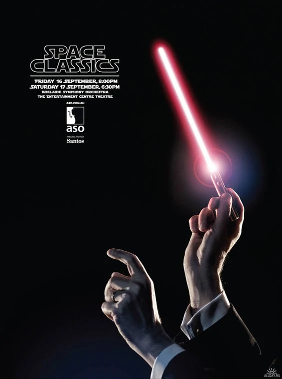

Основы графического дизайна
Задумываетесь над изучением графического дизайна? Специалисты в этой области нужны практически каждому бизнесу. У вас будет отличная возможность поработать в разных сферах и найти для себя подходящее направление.
В этой статье вас ждет полное руководство по графическому дизайну. Вы узнаете, что такое графический дизайн, как он выглядит, где применяется, из каких элементов состоит. Получите представление о принципах, помогающих создавать хороший дизайн, софте для работы и возможных вариантах обучения. Эта информация поможет вам сориентироваться в профессии и понять, в каком направлении двигаться.
Графический дизайн простыми словами
Графический дизайн (graphic design) — это деятельность по созданию визуально-коммуникативной среды. Простыми словами, визуальный способ общения с людьми через изображения, графику, цвет, текст и шрифты.
Когда музыкант хочет сообщить аудитории о предстоящем концерте и его атмосфере, он развешивает по городу и публикует в интернете афишу. В данном случае афиша — это продукт графического дизайна. Задача специалиста создать афишу, которая обратит на себя внимание целевой аудитории музыканта и донесет нужную информацию.
Основная цель графического дизайна — передать или усилить сообщение
Графика должна решить три задачи:
- Привлечь внимание нужной аудитории;
- Донести сообщение через визуал;
- Вызвать эмоциональный отклик и подтолкнуть зрителя к целевому действию.
Графический дизайнер не только творец, но и маркетолог. Ведь дизайн должен быть не просто привлекательным, но и решать бизнес задачи. Когда речь идет об упаковке продуктов питания, суть работы дизайнера в том, чтобы создать упаковку, которую покупатель заметит на полке, и захочет купить, потому что еда в ней будет выглядеть привлекательной.
Графический дизайн применяется во всех областях бизнеса. Он нужен любому бренду и компании, которые хотят наладить визуальный контакт со своей аудиторией.
К продуктам графического дизайна относятся:
- Книжные иллюстрации;
- Рекламные баннеры;
- Макеты книг, газет и журналов;
- Упаковка продукции и этикетки;
- Фирменный стиль бренда и его логотип;
- Информационные плакаты и указатели;
- Оформление приложений и веб-сайтов;
- Буклеты, брошюры, календари, визитки и другая полиграфическая продукция.
7 элементов графического дизайна
Любой дизайн состоит из элементов. Именно они формируют его структуру и помогают передать визуальное сообщение. Элементы можно сравнить со строительными блоками, из которых строится композиция.
К основным элементам дизайна относятся:
1. Цвет
У цвета есть три характеристики:
- Оттенок (Hue) — разновидность цвета;
- Насыщенность (Saturation) — чистота цвета;
- Яркость (Value) — светлый/темный.
Цвет важен для восприятия дизайна и привлечения внимания. Каждый цвет по-разному влияет на людей, может вызвать чувство радости или создать угнетающую атмосферу. К выбору цвета нужно подходить очень осторожно, по возможности изучить колористику, без которой дизайнеру будет сложно подбирать подходящие оттенки.
2. Линия

Один из основных элементов дизайна. Линии бывают прямыми, кривыми, толстыми, тонкими, трехмерными. Ими можно разграничить определенную часть дизайна, направить внимание зрителя, передать настроение формой.
Например, волнистые линии оживят дизайн и сделают его более молодежным и игривым, а прямые линии средних размеров подойдут для оформления строгих работ в классическом стиле.
3. Форма
В дизайне под формой понимают результат замкнутых линий, образующих границу. Формы могут быть геометрическими (круги, треугольники, квадраты), абстрактными (минималистское представление о реальности, пример — простые иконки), органическими (естественные и гладкие, без четко очерченных краев).
Формы лежат в основе логотипов и иллюстраций.
4. Текстура
Текстура может передаваться через стиль дизайна или даже физически (когда речь о физическом носителе, например, рекламе, которую можно напечатать на старой бумаге). Она может быть глянцевой, гладкой, шероховатой и т.д.
Самые популярные текстуры: бетон, дерево, мрамор, зеленая трава, ткани, мятая бумага.
5. Размер
Размер это всего лишь то, насколько большим или малым является любой элемент дизайна. С помощью размера можно расставлять акценты, например, сделав основной рисунок, передающий суть сообщения, большого размера.
6. Типографика
Типографика — это художественное оформление текста с помощью символов, знаков и шрифтов. Шрифты могут быть с засечками и без, полужирными, тонкими, рукописными, наклонными, прямыми. В мире насчитывается более тысячи шрифтов, не считая авторского леттеринга.
Шрифт, как и цвет может передать определенную атмосферу и настроение.
7. Пространство
Пространство — это пустое место на макете. Оно не создается отдельно, ведь по сути это просто фон, основа, на которой размещаются все остальные элементы.
Пространство формируется в процессе заполнения макета другими элементами. Оставленные пробелы помогают подчеркнуть другие элементы.
Инструменты для работы
Графический дизайнер работает с цифровыми инструментами: ПК, графическим планшетом, программным обеспечением. Традиционные инструменты, такие как бумага и карандаш, тоже могут использоваться в работе, но больше для набросков и зарисовок идей.
Современные инструменты упрощают творческий процесс и помогают быстро создавать работы высокого качества.
Для работы дизайнеру также потребуется специальный софт. Самые популярные программы для работы:
- Adobe Photoshop. Предназначен для работы с растровой графикой, обработки изображений.
- Adobe Illustrator. Помогает создавать иллюстрации высокого качества, авторские шрифты, логотипы, векторную графику.
- Affinity Publisher. Софт для создания цифровых и печатных макетов разной сложности.
- Figma. Здесь создаются макеты сайтов и веб-страниц, анимации, логотипы, интерфейсы приложений, презентации и прототипы.
- Adobe After Effects. Программа для создания анимационной графики и визуальных эффектов, 3D-объектов, оживления персонажей.
Хороший софт доступен только по платной подписке, но почти у каждой программы есть альтернатива. Среди лучших бесплатных инструментов — Inkscape, GIMP, Lunacy, Blender.
Как научиться
Начать стоит с изучения основ и теоретической части. Вы должны понимать, как работает дизайн и что делает его хорошим. После этого можно перейти к практике, изучить функционал программ и попробовать создать в них свои первые работы. Например, нарисовать какой-то элемент.
Практику можно оттачивать на курсах дизайна. Если выбирать программу с обратной связью, преподаватели оценят ваши работы и помогут проработать ошибки. А дополнительную информацию о графическом дизайне можно почерпнуть из книг.
О профессии
Графический дизайнер профессионально занимается созданием визуальной концепции. Он помогает выстроить коммуникацию заказчика с целевой аудиторией через слова, символы, графику и изображения. Проще говоря, разрабатывает визуальное послание.
Обязанности графического дизайнера могут отличаться, в зависимости от направления, в котором он работает. Например, работа в сфере брендинга подразумевает создание логотипа, фирменных листовок, визиток. А работая с дизайном пользовательского интерфейса специалист будет оформлять блоки, иконки, кнопки, формы сбора заявок на сайте и в приложении.
Графический дизайнер профессионально занимается разработкой визуальной концепции. У этой сферы много разных направлений. Одни дизайнеры разрабатывают фирменный стиль для брендов и логотипы, другие — дизайн интерфейса мобильных приложений.
Вне зависимости от направления, основная цель графического дизайна всегда одна — передать и усилить сообщение от заказчика к его аудитории. Специалист должен изучить сообщение своего клиента и передать его через понятную визуальную форму. Создать не просто красивый дизайн, а дизайн, который будет решать бизнес-задачи: рекламировать продукт, подталкивать к целевому действию.
Графический дизайн постоянно трансформируется и подстраивается под изменения в мире. Появляются новые стили и направления, отражающие настроение эпохи. В будущем дизайнеры смогут создавать работы более высокого качества, тратя на это меньше времени. Развитие нейросетей и софта, который берет на себя часть задач дизайнера, откроет еще больше перспектив для творчества.
Чтобы ваша работа оставалась востребованной, нужно выбирать перспективное направление дизайна и развиваться именно в нем. Актуальность оформления печатной продукции постепенно падает, и сегодня на первый план выходит цифровой дизайн, оформление сайтов и дизайн пользовательского интерфейса. Прокачивайте свои навыки, пробуйте новые инструменты, изучайте разные стили. И тогда вы сможете стать профессионалом в графическом дизайне.